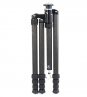

无忌
器材库
全部器材
产品年表
名词百科
榜单
器材库
> 脚架 > S-2204-N

思锐
S-2204-N
分类
脚架
点评
0 条
图片
0 张
评测
4 篇
思锐S系列三脚架采用了可移动的锻造本体，平板式收纳设计给使用者带来更多的便利。
产品类型
脚架
综合评分
暂无评分
无忌评测
思锐S-2204-N评测
规格参数
网友点评
(0)
产品图 / 样片
(0)
评测文章
(4)
详细规格
发布日期
2009-05-01
产品类型
三脚架
材质
碳纤维
节数
4
最大管径
28mm
最小管径
19mm
折合高度
450mm
最高工作高度
1460mm / 不升中轴：1230mm
最低工作高度
450mm
最大负重
15kg
自重
1.3kg
该产品暂无存档的网友点评
该产品暂无存档的产品图
评测 / 相关文章
详细内容
（存档）
思锐S-2204-N评测
（存档）
［资讯］思锐上海展会争奇斗艳
（存档）
［资讯］7月思锐上海再展风采
（存档）
相关文章
［资讯］思锐上海展会争奇斗艳
（存档）
［资讯］7月思锐上海再展风采
（存档）
［资讯］［高层会客室］无忌专访之思锐篇
（原站已下线）
［资讯］2009 P&E 现场猎片之思锐
（原站已下线）
［资讯］思锐S系列三脚架即将上市
（存档）